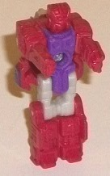
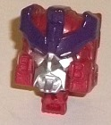
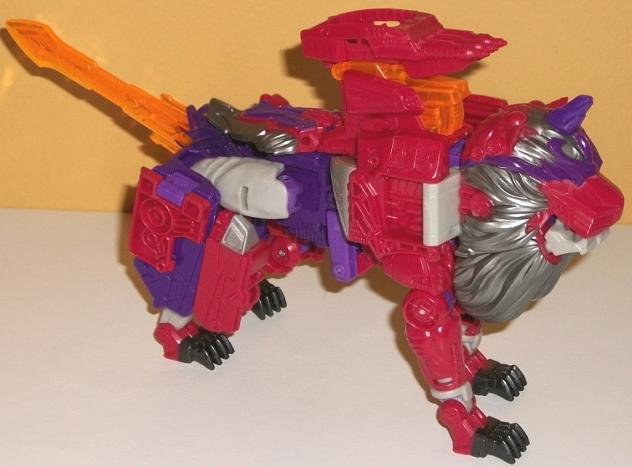
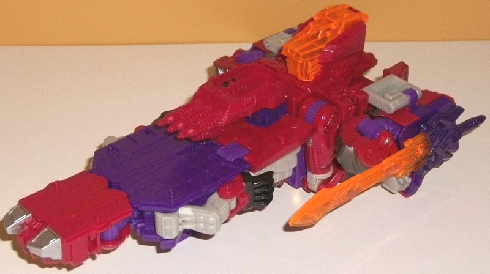
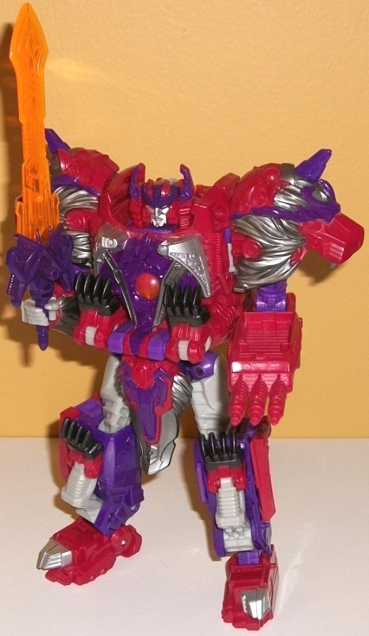

Allegiance
: Autobot
Size
: Voyager
Difficulty of Transformation to Lion
:
Medium
Difficulty of Transformation to Spaceship
:
Easy
Color Scheme
: Dull fuchsia, moderately
dark purple, and some silver, light milky gray, dark glossy purple, transparent
bright orange, and metallic black
Rating
: 9.2


Alpha Trion's little
Titan Master is Sovereign, who seems to be a homage (in terms of details)
to
Cybertron Safeguard
. In robot mode he's
got the usual Titan Master proportions, though sadly no paint at all--
he's got a fuchsia head, arms, and legs; a purple body; and light milky
gray legs. At least there's not only two colors in this mode, with the
gray helping to break up the colors at least a little, but there's a lot
of nice details here. The arms look fairly generic with merely hands molded
onto the insides, but the lower legs have some interesting ridged boxy
details on them, the main body looks very much like a futuristic piece
of body armor, and the head looks rather "
Needlenose-y
"
with two eyes, a faceplate, and a middle forehead vent with side crests.
As with all Titan Masters, Sovereign can move back-and-forth at the hips
and knees (as one, each leg is bolted together), as well as limited ball
movement at the neck and shoulders. In head mode, Sovereign makes for a
pretty good Alpha Trion head, with a bit more of a stern yet wizened look.
He's got a three-pronged head crest, and little vents on the sides of the
cheeks. His eyes are rather narrowed, but look pretty good with the dark
purple on the headcrest lined around said eyes. The rest of his face and
beard (and his eyes) are a nice silver.



Alpha Trion's first
alt mode is-- surprise!-- a technorganic lion! This is a really nice nod
for BotCon fans, as the first-ever toy of Alpha Trion was originally planned
to be a redeco of
Beast Machines Snarl
, a...
technorganic lion. (The basic idea was eventually released as
"Alpha
Trizer"
at BotCon 2014.) For the most part, this is a pretty solid
mode, with generally good proportions and an appropriately thick body for
a lion. The only exception when it comes to proportions in this mode are
the folded-up robot toes on the hind legs, which really make those hind
legs far too thick and can impede articulation back there a bit, as well.
From a side view, the way the body folds up via a hinge in the center of
the body does leave a slight gap that you can look through the lion mode
from the side, but this is relatively minor since it's not visible from
the vast majority of angles. The color scheme is fairly classic Alpha Trion,
being primarily maroon/fuchsia and a medium purple. Both colors contrast
against each other quite well, though if the fuchsia was just a TOUCH lighter
I wouldn't complain. There's also-- unfortunately-- some light milky gray,
mostly on the upper rear legs and a few other minor parts like the hinges
that connect the lion head to the body and the lower ankles on each lion
leg. It's a really blah shade of the color, and the silver paint looks
much better. Alpha Trion's colors are varied up quite nicely, with some
silver on the mane (to make him look wizened and old), parts of the main
body, and lower back in this mode. There's some nice metallic black on
the paws, and a REALLY nice bright transparent orange used for the cockpit
cover and the sword-tail that both contrasts excellently against the purple
and complements the fuchsia quite well. The only paint apps I really feel
are missing from this mode are the eyes, which are same purple as the "eyebrows"
around them. The mold detailing is very nice for this mode, with sections
of rounded, intricate, archaic-looking parts on the shoulders, back, and
portions of the lion mode head especially. The detailing on the claws,
lower legs, and the like also looks quite technorganic and awesome. The
lion face is a nice mix between angry and wizened, though I'm not sure
what's up with the unicorn horn. That kinda feels out-of-place. For articulation
in this mode, Alpha Trion can move at the front knees (at two points),
front ankles (at two points), back and out a bit at the rear hips, back
at the knees, and back-and-forth at the rear ankles. Unfortunately the
shoulder articulation isn't existent because of the transformation, and
because of the lion teeth actually being the robot fists his mouth can't
open and close. One last note-- above the cockpit you're supposed to attach
a Alpha Trion's maroon triple-barreled weapon that can seat a Titan Master,
but it doesn't hook on much. There's two shallow tabs that are theoretically
supposed to connect the two parts, but they're so shallow even the slightest
bump will cause the weapon to fall off, which is a bummer, and there's
no other way to store it in this mode.
Alpha Trion's other
mode is a futuristic spaceship, which-- not coincidentally at all-- somewhat
resembles Vector Prime's alt mode. The front section is flat and looks
a bit like an aircraft carrier, along with small "wings" on the side. I
wouldn't call this a bad mode by any means, but it is the weakest of Alpha
Trion's three modes. The wings are fairly weak, consisting of just the
robot shoulders folded up-- the arms and lion head halves are quite obvious
there. On a lesser note the lion paws are a bit obvious on the sides of
the ship and on the bottom, near the rear. The cockpit from the lion mode
fits best in this mode, looking like the "command center" of the spaceship
near the back. The front two-thirds or so have panels that fold out to
make it relatively flat and, again, like an aircraft carrier, so Alpha
Trion looks more mechanical and less technorganic in this mode. The paint
on this mode is also a bit sparse compared to the other two modes, with
the top spaceship parts not having much paint on them, and same with the
"command center". The three-pronged maroon weapon mentioned earlier pegs
in solidly right in the middle of this mode, so no issues there, thankfully;
the sword is pegged in the side of one of the rear side "wing" portions
of this mode, which is a solid connection even if it sticks out pretty
blatantly. There's also four pegs for Titan Masters to stand on on Alpha
Trion's "aircraft carrier" portion of this mode, near the front.
Alpha Trion's robot
mode is surprisingly close in terms of transformation to his spaceship
mode-- the main differences are that the side "wings" are folded out to
become the shoulders and arms, the leg panels are folded up and separated
into the actual legs, and of course the Titan Master is plugged in. This
is Alpha Trion's best mode, and looks really really regal and ancient.
The lion head halves used for the shoulders may seem like "kibble" to some,
but I think the silhouette really helps enhance the look of this mode and
looks great, especially with the jaw portions gone and forming his lower
arms. The only real "kibble" I would say this mode has is the cockpit on
the upper back, though it does fold up and stay in its place and doesn't
get in the way of articulation, so that's a really minor downside at best.
The lion paws are all folded up quite nicely on the chest and lower legs.
The chest is very intricately and wonderfully detailed, again looking not
coincidentally like Vector Prime's chest with lion paws. The transparent
orange "jewel" in the center can be pressed in to pop up little side antennae
extensions for the head, which help Alpha Trion look even more regal. The
"loincloth" has some nice technorganic detailing on it, as well as some
silver "fur" detailing on the sides-- really it all just looks so great,
I love that they took the "basics" of Alpha Trion and added so much to
him. Of course, he can hold both his sword and his gun easily in his hands.
As for articulation, Alpha Trion can move at the head, shoulders (at two
points), elbows, wrists, hips (at three points), knees, and ankles (at
two points). Thus, except for the waist, he's quite articulated, and pretty
well-balanced and proportioned as well. He is a bit "thick" in terms of
his appendages, but he can still get into some pretty awesome poses.
Titans Return Alpha
Trion is my favorite voyager-class mold from the line. He's got a very
majestic, royal-looking robot mode, a beast mode that's an homage to a
BotCon toy, and a spaceship mode that's an homage to Vector Prime, which
was redecoed into
Alpha Trion
FOR BotCon.
The color scheme is also solid, and there's only a few minor-to-moderate
extras in any of his three modes. So: solid modes, great colors, obscure
homages. What's not to like? Buy him, please.
Reviews by Beastbot